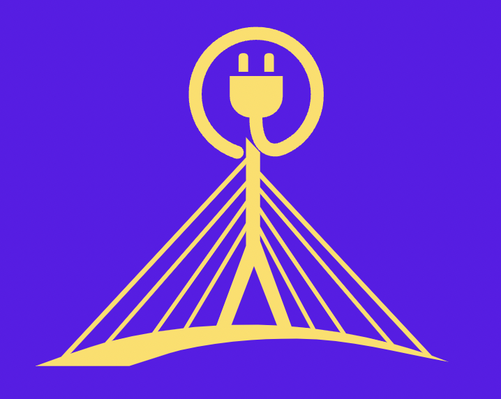

Bridging the Gap
In order to help make opportunities equal for students regardless or race, disability, or economic status, it is important that
technology gaps within classrooms are bridged.
Cater to Student Needs
It is important to approach the problem from the viewpoint that not all students are the same and thus have distinct needs. The allocation of digital resources should be
based on who needs them the most to succeed. Schools should survey the needs of each individual student before making a plan on allocating their resources.
Government Aid
Governments should also play a role in making technology more affordable, especially for students. Above that, it should be assured that both students and teachers
have an understanding of how to work the technology. This can be achieved through providing easy-to-use devices as well as providing training and resources on learning
how to work and comfortably use the devices.
What is Being Done?
After the outbreak of the Covid-19 Pandemic, more awareness was brought to this issue as nearly all schools turned to online learning. As a result, a fund was started
in California called The California Bridging the Digital Divide Fund. It has raised over $12 million and provided students with thousands of computers and network hotspots.
Chicago has also seen many philanthropic actions, with public schools provided free internet to 100,000 students. Many states are also ensuring student access to WiFi and computers.